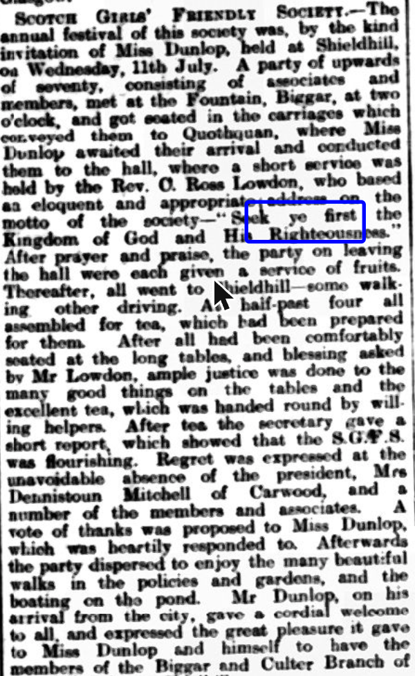

The Names He Carried · Case LBD-001
The Case for Sir Nathaniel Dunlop
We believe Laurence Brown Douglas was the son of Sir Nathaniel Dunlop of Shieldhill, the laird of the estate where his mother, Agnes Brown, grew up and lived. This page sets out every piece of evidence we have found, what it shows, what it does not show, and what could still prove us wrong.
1. The man
Nathaniel Dunlop was born at Campbeltown on April 7, 1830. He spent half a century with the Allan Line, the Glasgow shipping company whose steamers carried tens of thousands of Scots to Canada, became senior partner of its firm, James & Alexander Allan, and chairman of the Clyde Navigation Trust. His wife died within weeks of the birth of their only child, Ellen, and he never remarried.
In 1898 he bought Shieldhill, near Biggar, from the Chancellor family, who had held it since 1434, and with it the village of Quothquan below the house and its cottages. When he died at Shieldhill in 1919, his will left his daughter alone £100,000.
2. Not just a workplace: a village run from one house
It would be easy to picture Shieldhill as an employer and Agnes as one more servant. The records show something much closer than that. From 1898 the Dunlops were not only the people the village worked for. They owned the houses the villagers lived in, brought them their water, built the hall where they worshipped, ran the classes where they learned, and threw the parties where they danced.
| What the Dunlops were to Quothquan | What the records show |
|---|---|
| Landlord | Nathaniel bought the village with the estate in 1898 and rebuilt houses in it. In 1906 he applied for a water supply for the houses at Quothquan "belonging to him" (Motherwell Times, May 4, 1906). |
| Employer | The house kept gardeners, keepers, dairymaids and house servants. In 1901 the gardener, Alexander Archibald, a boy from the village row, was living in Shieldhill House itself (1901 census). |
| Church | In 1903 Nathaniel and Ellen built Shieldhill Hall in the village for evening services (Historic Environment Scotland, LB12995). |
| School | Through the winter of 1906–07 the hall ran classes with a governess who came from Glasgow two days a week. Farm servants were among the pupils (Hamilton Advertiser, April 6, 1907). The classes were still running in 1910 (April 2, 1910). |
| Ballroom | "With their usual generosity" Mr and Miss Dunlop gave a New Year supper and dance in the mansion house for the "tenantry, villagers, estate and house servants" (Hamilton Advertiser, January 4, 1902). "Usual" means it happened every year. |
| Entertainment | A lecture and Christmas party in the hall at their invitation (December 1905); the concert of March 1907, with the laird in the chair and Ellen at the piano before about 200 people; concerts again in 1910 and 1912. |
| Young women's society | On July 11, 1906, more than seventy members of the Girls' Friendly Society, a church society for young working women, came to Shieldhill by Ellen's invitation (Hamilton Advertiser, July 21, 1906). |
For a girl like Agnes, the Dunlops were the landlord of her family's cottage, the employer of the people around her, the hall where she would have gone on Sunday evenings, the classroom in winter and the dance floor at New Year. Her home, her work, her worship and her evenings all ran through one household. That is the world in which she became pregnant.
3. Agnes
Agnes McGarth Brown was born on December 18, 1885, near Peebles (birth entry). Her father died when she was three and a half months old (death entry). Her mother brought her to the row of cottages at Quothquan and died in 1891; her grandmother died the same year. In 1891, aged five, she was living a few doors from the Archibald family: Ann, a widow, her daughter Mary, and her son Alexander, then a stonebreaker (1891 census).
In 1901, aged fifteen, Agnes lived with her uncle at Lime Tree Cottage, and Mary Archibald lived at Gean Tree Cottage (1901 census). By 1907 Agnes was a domestic servant. When she registered her son, she gave her home as Gean Cottage, Shieldhill, Biggar (birth entry): Mary Archibald's cottage, about 400 feet from the Dunlops' hall.
4. The evidence pointing to Sir Nathaniel
He was there, among the servants and the young women
The newspapers put Nathaniel at Shieldhill with his servants and villagers year after year: the New Year dance in his mansion (1902), the hall (1905), the Girls' Friendly Society festival (1906), the hall concert he chaired (1907), the winter classes' entertainment he presided over (1910). The July 1906 festival matters most. About two months before Agnes became pregnant, Ellen hosted a service in the hall for young working women, then took them up to the house for tea, garden walks and boating on the pond:

No list of names was printed, so this does not prove Agnes was there. It does prove that Nathaniel was at home, among young working women of the district, that summer.
He owned the roof over her head
The cottages of Quothquan were his. Gean Cottage, the home Agnes gave in 1907, was one of them, about 400 feet from the hall he built.
His gardener's family took her in
Alexander Archibald, the Shieldhill gardener, was living in Shieldhill House itself in 1901, while the laird was away. His sister Mary kept Gean Cottage. The people who sheltered Agnes through her pregnancy were the laird's own staff and their family. That is exactly what Constance Anderson Douglas, Laurence's daughter, has said all her life: "a gardener took him in."
He was "the doctor"
Constance has always said Laurence's father was "a doctor at the estate." On April 23, 1907, two months before Laurence was born, the University of Glasgow made Nathaniel an honorary Doctor of Laws, in the presence of the Prince and Princess of Wales. The papers began printing him as "Dr. Nathaniel Dunlop" (Naval & Military Record, June 6, 1907; Daily Record, June 22, 1907; Liverpool Journal of Commerce, October 24, 1907). To his household and his village, the laird was now a doctor. Nobody in Quothquan would have asked what kind.
He had the means, and someone used them
About 95 per cent of Scottish births at the time happened at home. Agnes, a servant from a country village, instead gave birth at the Royal Maternity Hospital in Edinburgh, about 25 miles away, on June 14, 1907. She was still in Edinburgh twenty days later, when she registered the birth at the St Giles registrar, 24 Forrest Road (1907 directory). The family who raised her son, Robert and Lizzie Douglas, were living at 18 Lochrin Place, about 330 yards from the hospital door (electoral roll 1906–07; 1907–08). By 1911 the boy was living with them as Laurence B. Douglas (1911 census). A hospital birth far from home, a stay of nearly three weeks, and a quiet placement with a family by the hospital all take money and arrangements. Nathaniel was among the richest men on the Clyde.
The timing
Two weeks after Laurence was born, on June 28, 1907, Nathaniel Dunlop's name appeared in the King's Birthday Honours, and on July 15 he was knighted at Buckingham Palace (Morning Post and others, June 28, 1907). If a widower of 76 had fathered a child with a young woman from his own village, it would have been a scandal at the worst possible moment.
Agnes stayed close to her son
Agnes did not go home. By 1911 she was a nurse at the Royal Edinburgh Asylum in Morningside, and that August she married an asylum attendant, Thomas McKenzie, before the same registrar who had recorded Laurence's birth (marriage entry). In 1911 she was living and working about a mile from 16 Lochrin Place, where her son was growing up as Laurence Douglas. She stayed in Edinburgh (1912; 1915) after the Douglases moved to Dunfermline in 1912.
5. Why not his nephew, Dr Binnie Dunlop?
Binnie Dunlop, son of Nathaniel's brother Dr James Dunlop, was a medical doctor in Glasgow, born in 1874, single, and the only "Dr Dunlop" in the family in the autumn of 1906 (Medical Register). He fits the word "doctor" and he fits the age. But in our newspaper searches so far, no record places Binnie at Shieldhill at all: not at the dances, the hall, the concerts or the festival. Every record that puts a Dunlop among the servants and villagers of Quothquan puts Nathaniel there. Binnie moved to England by 1908 and was still single in 1911 (1911 census).
6. What could prove us wrong
- His age. Nathaniel was 76 in the autumn of 1906. Men can father children at that age, but it is uncommon.
- Where he was in June and July 1907. The papers place him in Glasgow on June 21 and July 2, 1907, and nowhere yet in Edinburgh while Agnes was there (Scotsman, June 22; Greenock Telegraph, July 3).
- No guest lists. No record yet names Agnes at any Shieldhill gathering.
- Other men. The father could have been anyone in Agnes's life. The family story, the estate and the arrangements point to Shieldhill; they do not rule out everyone else.
7. What would settle it
- DNA. A match between Laurence's descendants and descendants of the Dunlop family. Nathaniel's only child, Ellen, never married, so the match would have to come through his brothers' lines, such as the nephews named in his will.
- The hospital's own register. The Royal Maternity Hospital admission register for June 1907, held by Edinburgh University (reference LHB3/14), may show who referred Agnes or paid for her stay.
- Estate papers. Rent books, the valuation rolls for Gean Tree Cottage, and any surviving Shieldhill letters.
8. Timeline
- 1830Nathaniel Dunlop born at Campbeltown, April 7
- 1885Agnes McGarth Brown born, December 18
- 1891Agnes, five, a few doors from the Archibalds in the Quothquan row
- 1898Nathaniel buys Shieldhill and the village of Quothquan
- 1901The gardener's household living in Shieldhill House; Mary Archibald at Gean Tree; Agnes, 15, at Lime Tree
- 1902New Year dance in the mansion for servants and villagers, "with their usual generosity"
- 1903Nathaniel and Ellen build Shieldhill Hall
- May 1906Water supply for the houses at Quothquan "belonging to him"
- July 11, 1906Girls' Friendly Society festival at Shieldhill; Mr Dunlop welcomes them
- Autumn 1906Agnes becomes pregnant (counted back from the birth)
- Winter 1906–07Classes in the hall; concert with the laird in the chair
- April 23, 1907Nathaniel made an honorary Doctor of Laws: "Dr. Nathaniel Dunlop"
- June 14, 1907Lawrence Brown born at the Royal Maternity Hospital, Edinburgh
- June 28, 1907Nathaniel named a knight
- July 4, 1907Agnes registers her son in Edinburgh, giving her home as Gean Cottage, Shieldhill
- 1911Laurence, three, with the Douglases at 16 Lochrin Place; Agnes a nurse about a mile away
- 1919Sir Nathaniel dies at Shieldhill, November 15

With thanks to Constance Anderson Douglas, Laurence's daughter, whose lifelong account, "a doctor at the estate" and "a gardener took him in," is where this investigation began. Newspaper sources: British Newspaper Archive. Census and statutory records: National Records of Scotland, via ScotlandsPeople and Ancestry.